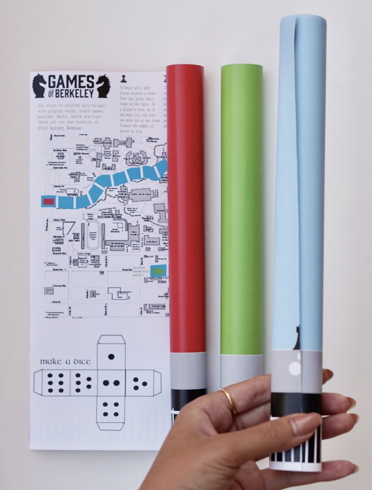

<html>
	<head>
		<title>Rebecca Yeap</title>
		<link rel="stylesheet" type="text/css" href="assets/css/bootstrap.min.css">
		<link rel="stylesheet" type="text/css" href="assets/css/cmyk.css">
	</head>
</html>
<body>
	<div id="navbar">
		<div id="labels-container">
		<div class="headerlabels" style="display: flex;">
				<div class="about">
					<a href="about.html">ABOUT</a> 
				</div>
				<div class="work">
					<a href="work.html">WORK</a> 
				</div>
				<div class="nonwork">
					<a href="nonwork.html">WORK</a> 
				</div>
			</div>
		</div>
		<div>
			<!---->
		</div>
	</div>
	<div class= "container-fluid" id="about_block"> 
		<div class="row">
			<div class="col-md-6 offset-md-2">
				<div style="padding-top: 100px; margin-left: 50px">
					<h2>Games of Berkeley</h2>
				</div>
				<div class="row">
				<div class="col-md-6" style="padding-top: 75px; margin-left: 50px">
					<p>On November 2016, I participated at the CMYK Designation Jacob’s Institute for Design Innovation at UC Berkeley, an annual one-day design competition hosted by the student organization Innovation Design and sponsored by the Games of Berkeley. 
					 </p>  
					<p>Of the three prompts, my team (Melissa Silvers and Andre Mangulabnan) and I designed marketing material with an emphasis on the Games of Berkeley’s “Play Everywhere” slogan. We produced two deliverables: a marketing flyer and merchandise tote. Ultimately, our team’s submission placed 3rd by a judging panel of distinguished industry product and UI/UX designers.</p>
					</div>
				
			</div>
		</div>
		<div class="row">
			<div class="col-md-8 offset-md-2"> 
				
			</div>
			
		</div>
	</div>
		
</body>
</html>